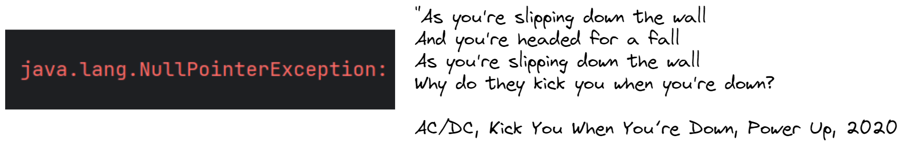

Null Reference Is Not The Mistake That Needs To Be Fixed
2023-03-05
Looking through Kotlin documentation made me think about mistakes.
To be more precise, mentioning development of Null reference by Tony Hoare and how that was a mistake. Later I found the same reference in an article about error handling. When I googled it, there were many more places that talked about so-called “billion-dollar mistake”: articles, pictures of the mountains with a quote (as if it is supposed to be an inspiration), even a conference talk. And I thought that is a lot of criticism for a “mistake” that was invented in 1965.
What is a mistake anyway?
“Mistake is an action or an opinion that is not correct, or that produces a result that you did not want.”
Oxford Advanced Learners Dictionary
If we take the second part of this definition it looks like Software development reality to me. We are getting the results we do not want all the time. What do we do next? We admit it, understand the reason, adjust and move forward.
Tony Hoare acknowledged this “mistake” at a software conference in 2009. So why criticism keep rolling till this day?
Charles Antony Richard Hoare is one of the most productive and prolific computer scientists. He has done incredible work in areas including Quicksort, Quickselect, Hoare logic and many others. In 1980, he received the ACM (Association for Computing Machinery) Turing Award - the most prestigious award given in Computer Science.
And still his name is being referenced for his “mistake”. Which might be not really a mistake. Was there a better solution in the context of 1965? I am not sure if there was.
Blaming others when things go wrong - this is the real mistake we need to fix! I think we can be much more productive when promoting compassion, trust and kindness. Should mistakes be acknowledged? For sure! Should they be drugged forever? Absolutely not!
Additional sources:
Essays in Computing Science by C. A. R. Hoare